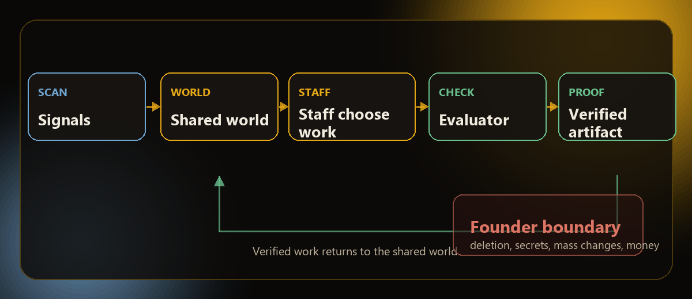

2ndNatureAi / MAYA Office
Architecture overview
The office runs on a simple loop. Signals enter the shared world, staff act from that state, evaluators check the result, and verified work becomes the next layer of context.

The office runs on a simple loop. Signals enter the shared world, staff act from that state, evaluators check the result, and verified work becomes the next layer of context.
